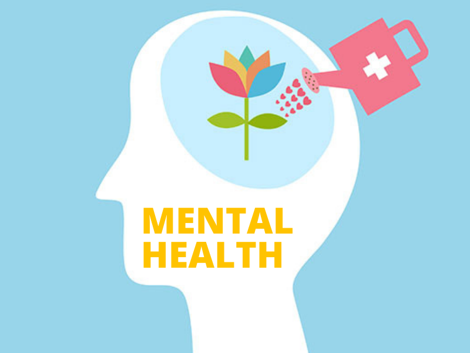

MENTAL HEALTH Your mental health. Fredericka Kusi Wed 02, 2019  Our emotional, psychological, and social well-being are all parts of our mental health. It influences our thoughts, emotions, and behaviors. Additionally, it influences how we respond to stress, interact with others, and make good decisions. Every period of life, from childhood and adolescence to maturity, is vital for mental health. Poor body care can have a negative impact on both a person's physical and mental well-being. Eating disorders, sadness, anxiety, and body dysmorphia can all be caused by a negative body image. Anyone who thinks they might have any of these problems should seek expert advice. Some Types Of Mental Health Issues ANXIETY DISORDER Anxiety disorders fall within the category of mental health issues. It's challenging to get through the day when you're anxious. Sweating and a fast heartbeat are symptoms, along with feelings of unease, panic, and terror. Medication and cognitive behavioral therapy are forms of treatment. The ideal treatment plan for you can be created by your healthcare provider. Post-traumatic stress disorder A horrific event can cause post-traumatic stress disorder (PTSD), a mental health disease that can be brought on by experiencing it or seeing it. Flashbacks, nightmares, excruciating anxiety, and uncontrollable thoughts about the incident are just a few possible symptoms. Psychosis People who experience psychosis start to lose touch with reality. This may entail having hallucinations, which involve seeing or hearing things that others cannot see or hear, and holding beliefs that are not true (delusions). Obsessive compulsive disorder OCD is a common, enduring, and protracted mental condition in which a person has uncontrollable, repetitive thoughts (sometimes called "obsessions") and/or behaviors (often called "compulsions") that they feel forced to repeat. 10 things you can do for your mental health. Surround yourself with good people: Individuals with strong social or familial relationships typically have better health than those without. Plan get-togethers with sympathetic family and friends, or seek out chances to mingle with strangers at a club, class, or support group. Learn how to deal with stress: Whether we like it or not, stress is a normal part of life. Use Tai Chi, the One-Minute Stress Strategies, exercise, nature walks, pet play, or journal writing as healthy coping techniques. Don't forget to laugh and see the humor in everything else as well. Studies show that laughing boosts your immune system, reduces stress, unwinds your body, and eases suffering. Value yourself: Be kind and respectful to oneself, and refrain from criticizing yourself. Think about broadening your horizons or adding more of your preferred pursuits and activities to your schedule. Try learning to dance, picking up an instrument, starting a garden, doing a crossword puzzle every day, or becoming fluent in a foreign language. Give yourself: Give someone else your time and effort. It's a great chance to make new friends, and you'll feel good knowing that you contributed to someone else's well-being. Break up the monotony: Even while our routines boost our productivity and strengthen our feelings of comfort and safety, a tiny variation of pace can add life to a dull schedule. Alter your running schedule, plan a trip, take a stroll in a different park, hang some new artwork, or try a new restaurant. Avoid alcohol and other drugs: Keep your alcohol consumption to a minimum and abstain from other drugs. Although they are occasionally used as "self-medication," alcohol and other substances only serve to exacerbate problems. Set realistic goals: List the steps you must take to achieve your academic, professional, and personal goals after determining them. Aim high, but don't lose focus; don't overcommit. You'll feel a great feeling of pride in yourself as you progress toward your goal. Quiet your mind: Take up meditation, prayer, or mindfulness practices. Your mental health and outlook on life can be improved through prayer and relaxation exercises. In fact, research indicates that meditation may encourage serenity and enhance the advantages of therapy. Get help when you need it: Asking for help is not a show of weakness, but rather of power. It's also important to remember that treatment is effective. People can recover from addictions and mental problems with the correct care, leading happy lives. Take care of your body: Your mental health can be enhanced by taking care of your physical needs. Take care to eat balanced meals Don't smoke or use a vape. Take in a lot of water. Exercise improves spirits and reduces melancholy and anxiety. Get adequate rest. According to researchers, college students who don't get enough sleep have a higher incidence of depression.